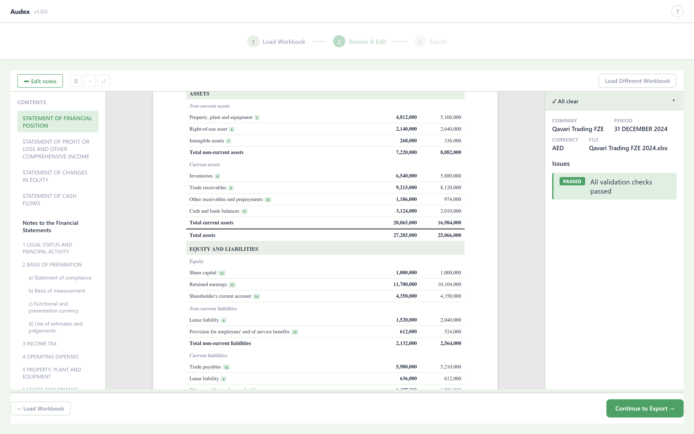
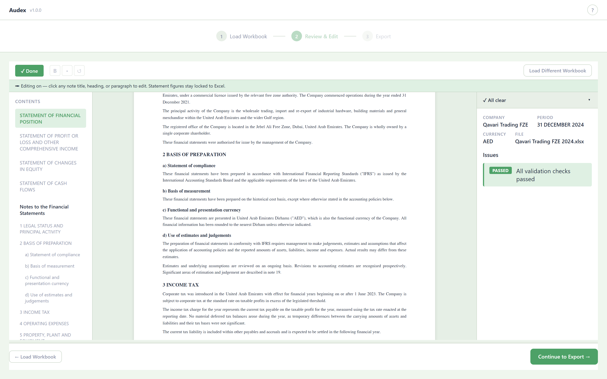
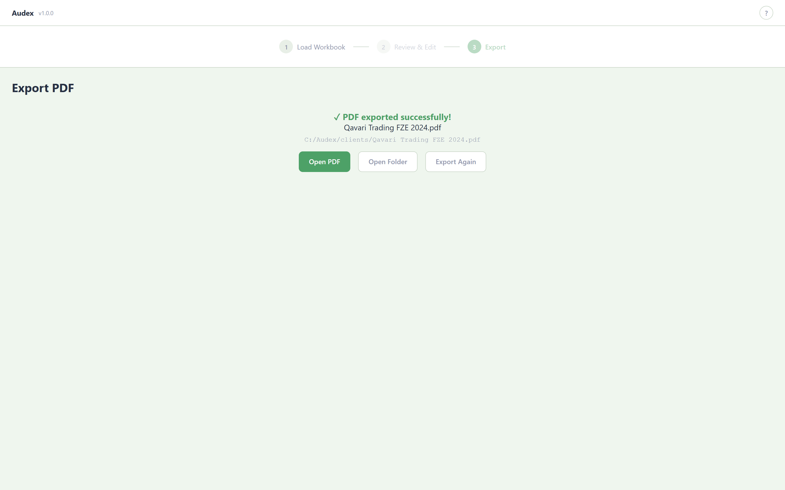

Audex turns your Excel trial balance into a complete set of IFRS financial statements — four primary statements, 20 notes, and a clickable table of contents with live cross-references. What used to take two days in Word now takes minutes.
audex-demo.mp4 into this folder next to index.html and refresh.
Load → review & edit → export. Every figure on screen is from a fictional demo company (Qavari Trading FZE).
Your numbers are already correct in Excel. Then comes the slow part: retyping every line into a Word template, hand-formatting 20 notes, wiring up the table of contents, and re-checking that note 7 still ties to the balance sheet after the last change. One late adjustment, and you do it all again.
Everything runs locally on your Windows machine. No cloud, no account, no telemetry — your client figures never leave your desktop.
Same workbook in, same statements out — every time. Reproducible numbers and formatting you can stand behind in a file review.
Financial position, profit or loss & OCI, changes in equity, and cash flows — plus a full IFRS note set, with a clickable TOC and live cross-references.
Rewrite narrative notes right in the preview, with bold and lists. The figures stay locked to the workbook — edit the words, never break the numbers.
Works from the spreadsheet you already export from Tally or your ledger. No new data entry, no proprietary format — just your workbook.
IFRS as applied in the UAE and the Gulf, with AED presentation and region-appropriate note language. Benchmarked against Big-4 reference statements and built with a UAE audit firm.
Drag in the Excel file you already have. Audex parses the trial balance, detects all four statements, and checks the math — flagging anything that doesn't tie before you go further.

Read the statements and notes exactly as they'll print. Turn on Edit notes to refine the narrative inline — bold, lists, wording — while every figure stays locked to the source workbook.

One click produces an audit-ready PDF — clickable table of contents, working cross-references, consistent IFRS formatting. Open it, hand it over, or re-run it after the next adjustment.

Audex is a local Windows app. There is no server to send your data to, no account to create, and nothing phoning home. Client confidentiality isn't a setting — it's the architecture.
Audex is free on the Microsoft Store. Install it, load a workbook, and export your first set of statements in minutes.
Solo-built and shipping fast. Send a note to get early access news, or just to tell us what your firm needs next.
Email us for updates